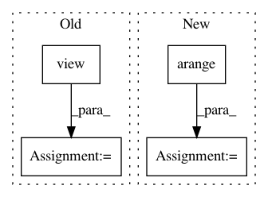

6437d4e459e0f56e059ef0400c03852ef91b8a32,torch_geometric/nn/pool/consecutive.py,,consecutive_cluster,#Any#,16
Before Change
arg = torch.empty((key[-1] + 1, ), dtype=dtype, device=src.device)
arg[key] = torch.arange(0, max_value, dtype=dtype, device=src.device)
out = arg[src.view(-1)]
out = out.view(size).long()
return out, perm
After Change
def consecutive_cluster(src):
unique, inv = torch.unique(src, sorted=True, return_inverse=True)
perm = torch.arange(inv.size(0), dtype=inv.dtype, device=inv.device)
perm = inv.new_empty(unique.size(0)).scatter_(0, inv, perm)
return inv, perm
In pattern: SUPERPATTERN
Frequency: 3
Non-data size: 4
Instances
Project Name: rusty1s/pytorch_geometric
Commit Name: 6437d4e459e0f56e059ef0400c03852ef91b8a32
Time: 2018-08-13
Author: matthias.fey@tu-dortmund.de
File Name: torch_geometric/nn/pool/consecutive.py
Class Name:
Method Name: consecutive_cluster
Project Name: rusty1s/pytorch_geometric
Commit Name: 05de5cfd5fe3953cdd50b1ec21f89e67d508f13f
Time: 2017-10-20
Author: matthias.fey@tu-dortmund.de
File Name: torch_geometric/nn/functional/spline_gcn.py
Class Name:
Method Name: weight_indices
Project Name: ultralytics/yolov3
Commit Name: 14e451962036515076b17b5bc01e89282f62b681
Time: 2019-04-21
Author: glenn.jocher@ultralytics.com
File Name: models.py
Class Name:
Method Name: create_grids